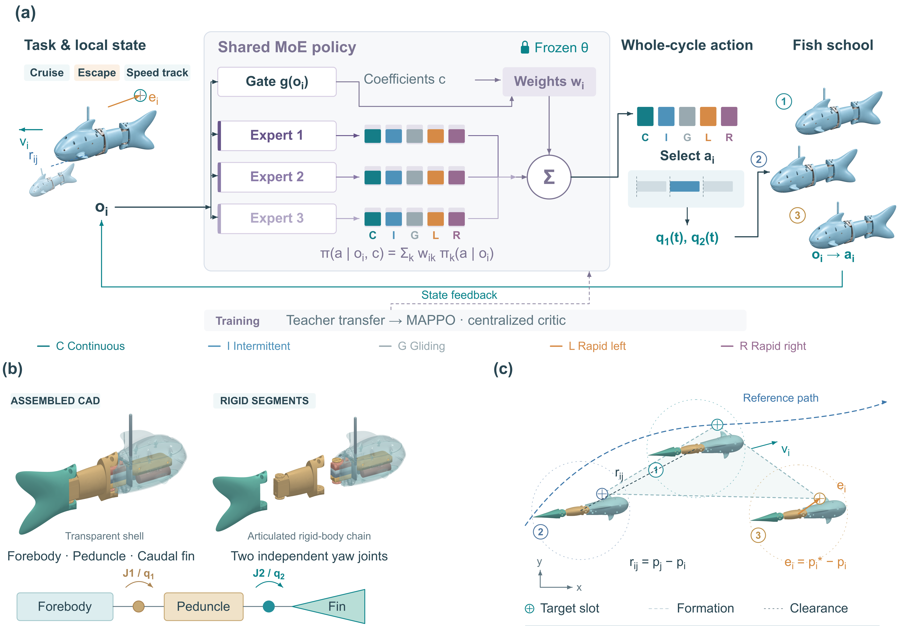
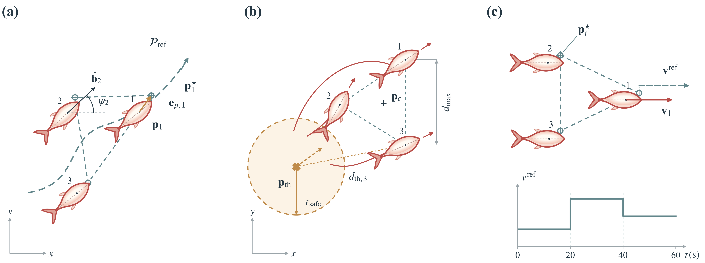

Observe locally
Tracking state, joint motion and neighboring fish form the feedback interface. Task commands enter the gate.
35 observation features
Compose shared feedback experts through task-specific gates. Connect swimming primitives to formation tracking, collective escape and variable-speed control.

Policy composition, articulated platform and formation references. Design illustration supplied with the project.
Tracking state, joint motion and neighboring fish form the feedback interface. Task commands enter the gate.
Each expert proposes a primitive distribution. State-dependent weights compose a single action distribution.
The selected primitive supplies a smooth two-joint reference. Fresh feedback drives the next decision.

Track moving target slots with local feedback.
Respond to a shared moving threat.
Follow time-varying velocity references.
Install the pinned Python dependencies, verify the files and run a short headless example. Plot the recorded planar trajectories with one command.
Full setup instructions ↗git clone https://github.com/FishMove-Tools/MAMoE-Fish.git
cd MAMoE-Fish
python -m pip install -r requirements.txt
python tests/smoke.py
python tools/run_demo.py --task cruise --steps 4
python tools/plot_demo.py outputs/demo.npzActors, gates, primitives, environment and learning routines.
SIMULATION MODELS ↗Articulated MuJoCo definitions and robotic-fish visual meshes.
TRAINING GUIDE ↗Source learning, independent target branches and configuration.
Python 3.12 · MuJoCo 3.3.7 · PyTorch 2.6.0. Task versions, model conventions and completed checks are documented in the repository. Evaluation data are being organized and are not included. Public showcase; no open-source or open-data license is currently granted.
Verification record ↗From Swimming Primitives to Collective Behaviors:
Mixture-of-Experts Control of Robotic Fish Schools
For software attribution, use the repository URL and commit identifier. Formal publication details will be added when available.